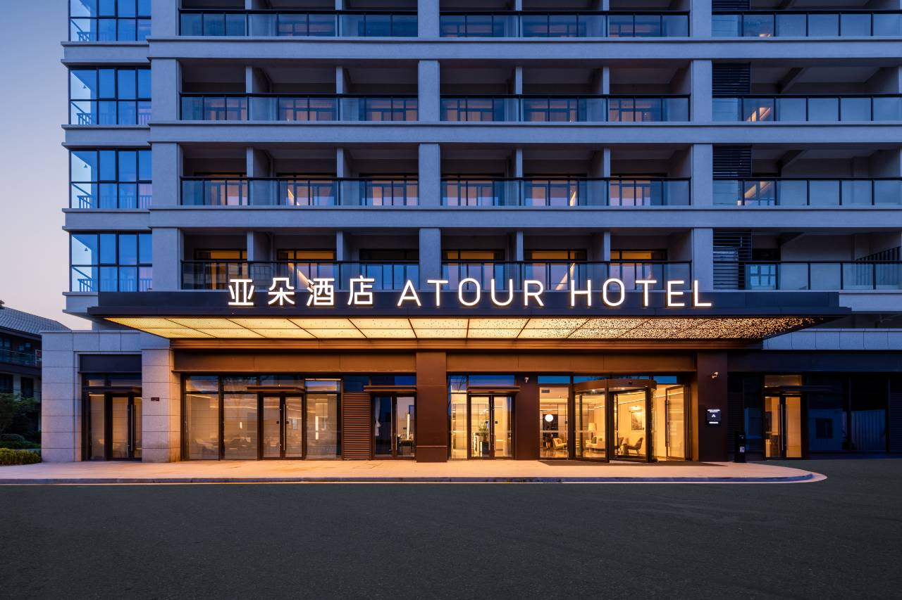

预算平衡首选 · 2025 年新开业 · 5 分钟到南沙沙滩

| 项目 | 详情 |
|---|---|
| 地址 | 浙江省舟山市普陀区朱家尖街道金沙大道 2269 号南沙里 20 幢 |
| 距上海 | 上海自驾约 280–300km |
| 自驾时间 | 约 3.5–4 小时（经甬舟跨海大桥） |
| 开业/装修 | 2025 年开业 |
| 评分 | 4.8 /5（800+ 评） |
| 参考价 | 平日 550–1100；国庆预估 800–1500 |
| 儿童政策 | 17 岁及以下使用现有床铺免费；1.2m 以下早餐详询酒店 |
| 推荐房型 | 行政阳台双床房 / 高级大床房 |
妈妈舒服 随时玩水
朱家尖最新亚朵，2025 年开业，硬件很新。位置在南沙景区旁边，开车 5 分钟到沙滩、8 分钟到森泊水乐园，是预算控制在 700–1100 范围内的最优解。